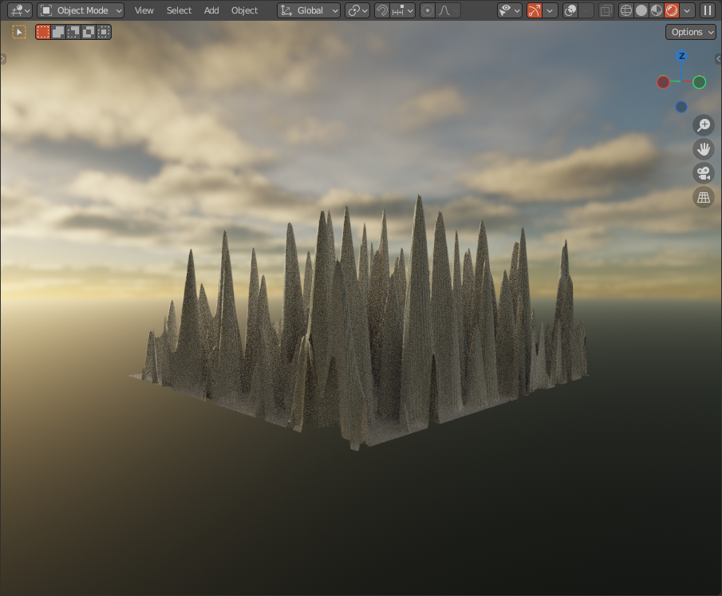
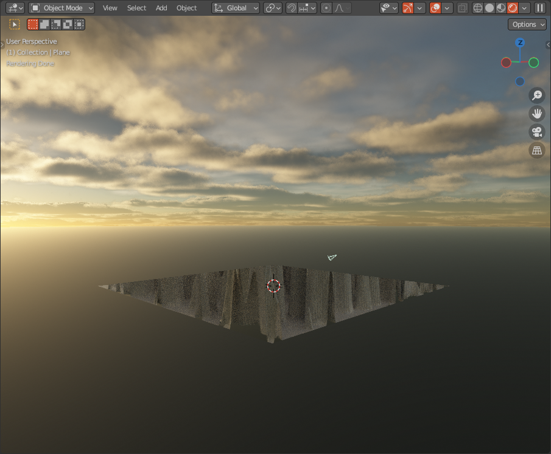

Help
Note
This page is under construction.
Issues
Crashing
Windows: Timeout Detection and Recovery (TDR)
If Blender crashes after using Stratus it could be becuase the GPU driver is crashing due to Windows TDR:
“If the operating system does not receive a response from a graphics card within a certain amount of time (default is 2 seconds) the operating system resets the graphics card.”
When the GPU driver is killed, the application using it (Blender) crashes aswell. To alleviate this issue, you can follow the instructions at the following links:
You can also enabling tiles, and reduce the tile size to avoid stalling.
Apple: GPU hang occurred, CoreAnalytics returned false.
Unfortunately, Apple doesn’t have a TDR equivalent. The only solution I’m aware of at this moment, is enabling tiles and reducing the tile size.
Limitations
Viewport Editor
Since the viewport editor is independent from Blenders render engine, Stratus will be unaware of some things, and it can look a little messed up. Here’s some stuff you should be aware of:
Displacements are not visible (Cycles)
 |
 |
|---|---|
viewport off |
viewport on |
Volumetrics are not visible (Eevee)